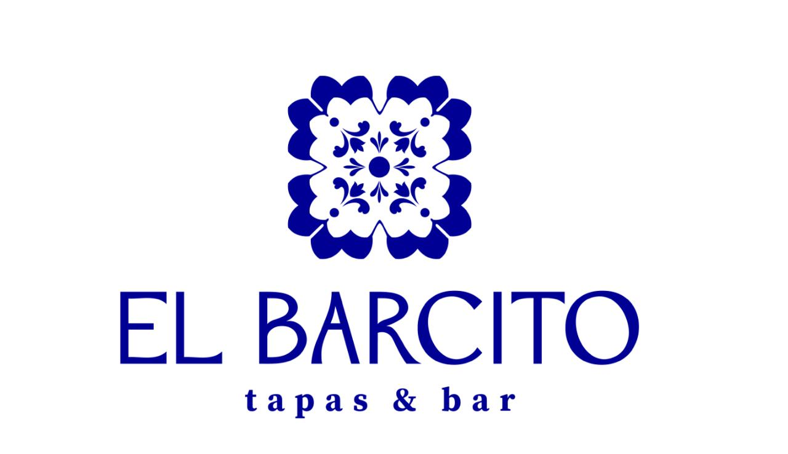

Digital Marketing Strategy
Helping a local Spanish tapas bar strengthen its
digital presence and turn social media attention
into restaurant visits.

I worked on developing a digital marketing strategy focused on strengthening El Barcito's social media presence and connecting content with business goals.
The research identified a gap between having an existing social media audience and effectively converting that audience into customers.
Existing audience on Instagram.
Existing content on the profile.
Low consistency and a weak conversion path from social media to restaurant visits.
A structured content mix designed to balance product, atmosphere, people and engagement.
Short-form video concepts designed to showcase food, atmosphere and the restaurant experience.
Structured Story sequences designed to encourage interaction and guide followers toward action.
Action-oriented calls to action connecting social media engagement with restaurant visits and bookings.
A structured approach to maintaining consistency across different content types and themes.
Campaign ideas designed around customer engagement, experiences and weekday traffic.
Ideas for encouraging customers to participate, interact and share their own experiences.
Drive weekday traffic through wine-focused experiences and discovery.
Create an experience around Spanish culture, food and the atmosphere of El Barcito.
Target nearby workers during quieter weekday periods and encourage afterwork visits.
Encourage customers to create and share their own El Barcito experiences.
“This project taught me how to connect creative content with business objectives. Rather than treating social media as only a visual channel, I learned to consider the full customer journey — from discovering a restaurant, to engaging with its content, to making a reservation.”